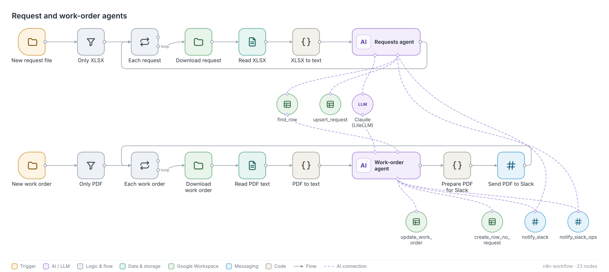
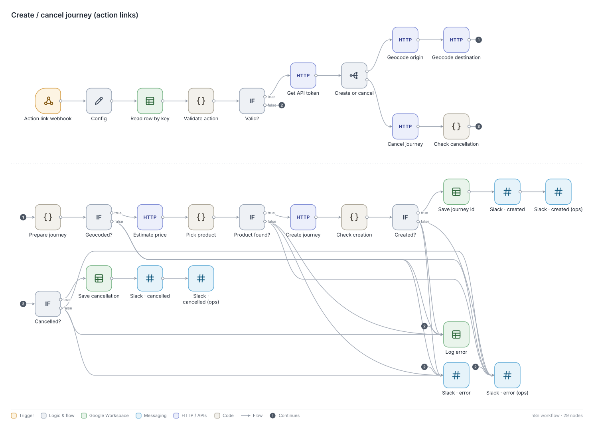
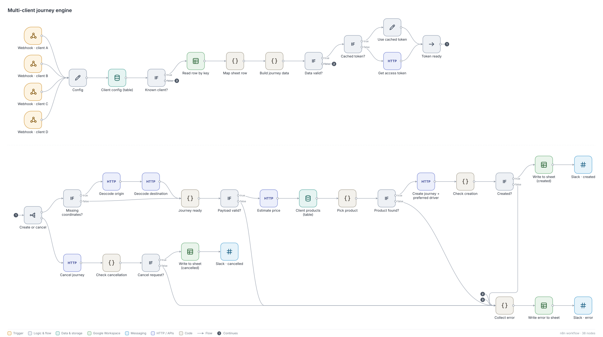

Case study · Cabify Spain · Apr to Sep 2026
Email-to-Reservation Pipeline (B2B)
A corporate client with a dedicated fleet sends its service requests as spreadsheets by email, and the fleet partner sends back signed work orders as PDFs. A support team used to type every trip into the platform and pre-assign the driver by hand, every day. Now two agents read both documents, a sheet compares them line by line, and the ride goes out through the public API with the driver already attached.
How it works
- Intake. Two mailbox watchers save the client's request files and the partner's work orders to Drive.
- Reading. A requests agent and a work-order agent extract every field. Their tools are deliberately narrow: find a row, upsert a request, update a work order, create a row when a work order has no request, and notify Slack. They can only write value columns; formula columns and anything that identifies a ride are out of their reach.
- Cross-check. The sheet is the operator's interface: one row per service-day and a CHECK column that compares request and work order live (OK, warning, mismatch, no request), with the differing cells highlighted. The formulas use VSTACK arrays, because curly-brace array literals break in a Spanish locale.
- Action. Each row has create and cancel links. They call a webhook that checks everything again on the server: the row must be OK, it must not already have a ride, and there must be at least 35 minutes of lead time. Then it geocodes both addresses, gets a price estimate, picks the product by duration and creates the ride. The ride ID and price are written back to the row.
- Edge cases. Request versions, services spanning up to 31 days, overnight trips, cancellations and work orders with no matching request all have explicit handling. Anything unclear posts a "human review required" message.


Driver pre-assignment
Every trip for this client needs a named driver. For a while that meant a manual step, because the internal service that reserves drivers was not reachable from n8n. I documented the volume that depended on it and opened a request with the product team. In September we moved to the public API's preferred-driver field, so creating the ride and assigning the driver is one call, behind a feature flag for the accounts that need it. Next: an automatic check after each call that the driver really is attached.
One engine for many clients
The same design is now generalised: one webhook per client, per-client configuration and product rules in n8n data tables, product selection that prefers an exact match over a wildcard and then priority, and a single error collector that writes to the sheet, posts to Slack and returns a clear 422. Payloads are built with JSON.stringify, so quotes and accents in addresses never break a request.

Taught at the company academy. This is the second case in the Level 2 n8n workshop (30 September 2026): one workflow collects the email attachments into a Drive folder, a second one reads each new file with an AI agent, updates the operations sheet and posts in Slack, and nothing is processed twice.
What I learned
- The agents read and compare; a person approves and a deterministic webhook acts. That split is what made the operations team comfortable using it.
- The first version was expensive for a reason that had nothing to do with the model: one tool returned a whole sheet on every call. The fix is in LLM cost control.
The client, the fleet partner and all volumes are left out on purpose. The sheet above is an illustration with invented rows.